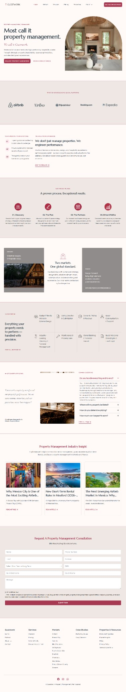

Help customers understand, choose and act.
For websites that are unclear, outdated, passive or sending people into weak enquiry and booking paths.
Confusion → decision
Explore websitesOyeola · websites · systems · digital products
When customers have to work to understand you, teams have to chase information, or a digital product feels like one more generic PDF, good opportunities get lost in the friction.
We investigate first. Then we decide whether the answer is to keep, fix, connect, rebuild — or leave something alone.

Website journeyWhy this matters
It rarely arrives as one obvious failure. It looks like a visitor who leaves, another status meeting, another spreadsheet, another product that competes on sameness.
Higher probability of a mobile bounce when load time rises from one second to three seconds.
Google/SOASTA research, 2017. SourceOf sales reps say they are overwhelmed by too many tools in Salesforce’s 2026 State of Sales.
Salesforce, State of Sales, 7th edition. SourceOf professional-services organizations report turning down work because of resourcing constraints.
Kantata, 2026 State of Professional Services research. SourceDifferent problems. Same approach.
Oyeola is not a catalogue of software services. Each path begins with the customer, workflow or product experience that needs to work better.
For websites that are unclear, outdated, passive or sending people into weak enquiry and booking paths.
For growing teams where information, ownership, reporting and capacity are scattered across tools and people.
For digital planner sellers who want a more polished, tablet-native, hyperlinked Goodnotes experience.
Experience before explanation
A working example reduces the amount a prospect has to take on faith.
See how a website can help a visitor make a decision instead of ending with a generic contact form.
Try the website demoSwitch between pipeline, delivery and capacity to see what management visibility can look like.
Explore the dashboardOpen a working planner sample and test the navigation and writing space rather than judging the product from screenshots alone.
Open the planner demoReal website work
These are existing portfolio examples already in the Oyeola repository — not AI-generated client projects.

Calm service presentation with an easier booking path.
View case study
A clearer journey for property owners looking for management help.
View case study
A modern service experience built to explain the offer quickly.
View case studyThe plan
The public process stays simple. Behind it, the work is more rigorous: diagnose, map, prioritize, architect, implement, test and improve.
Investigate the customer journey, operating workflow or product experience before prescribing a tool.
Separate what should be kept from what should be fixed, connected, replaced or ignored for now.
Create the smallest complete solution that makes the next step materially easier.
Founder-led, problem-led
I do not begin by deciding you need a new website, Airtable or another digital product. I begin by looking at what is making the experience harder than it needs to be.
If the right recommendation is to keep what already works, that should be an acceptable answer too.
Website Check
72/100Clarify the first screen and decision path.
Operations Check
68/100Connect sales-to-delivery handoffs.
A simpler next step
Send the website, process or digital product you want to improve. I will help you decide what deserves attention before you spend money rebuilding everything.